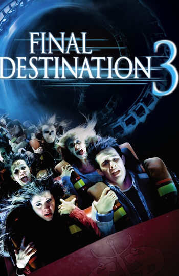

Director: James Wong
When Wendy Christensen has a vision of an accident on a rollercoaster that results in her and her friends' deaths, she instantly begins to panic and gets off the ride, causing some of her friends to get off as well. The remaining friends, including Wendy's boyfriend, are stuck on the roller coaster and involved in an accident. With Death waiting around the corner, Wendy and Kevin Fischer must try and work out Death's plan before they and the remaining survivors end up dead.
Final Destination 3 delivers the franchise's signature blend of creative death scenes and dark humor, making it an entertaining and thrilling ride for fans of horror and suspense.
After getting a premonition about a plane crash on his school trip, Alex, a student, saves a few of his classmates. However, their situation gets complicated when death starts chasing them.
Death is stalking Kimberly Corman and multiple survivors of a deadly highway accident.
Death returns to claim the lucky survivors of a deadly bridge collapse in this fifth frightening installment in the series.